Projects
The group’s theory is built into two quantum hardware platforms: superconducting circuits, in the quantum computer that Amazon Web Services is building, and molecular qubits, at NVision.
Superconducting circuits
AWS Center for Quantum Computing
Alex takes part in the Amazon Web Services quantum computing program, which is building a fault-tolerant quantum computer from superconducting circuits at the AWS Center for Quantum Computing in Pasadena, California. The work below was done with the AWS hardware and theory teams. It centers on one idea: if the most common error in a qubit can be detected when it happens, error correction becomes much cheaper.

Dual-rail erasure qubits
A dual-rail qubit stores one qubit in a pair of superconducting elements. When it loses energy, the dominant error in superconducting circuits, it leaves the computational space in a way that can be detected. Errors whose location is known, called erasures, are far easier to correct than unknown errors. We proposed the scheme for superconducting circuits, and with the AWS hardware team demonstrated a long-coherence dual-rail qubit and fast, high-fidelity detection of erasures.
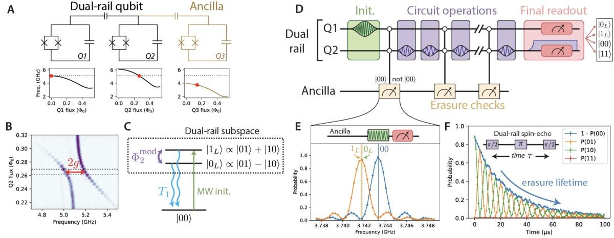
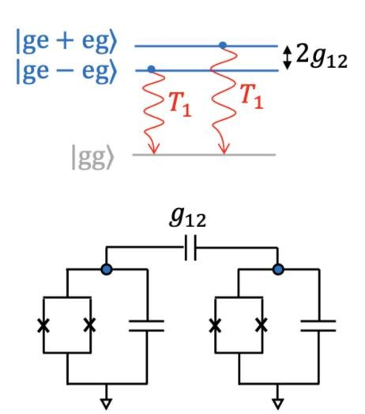
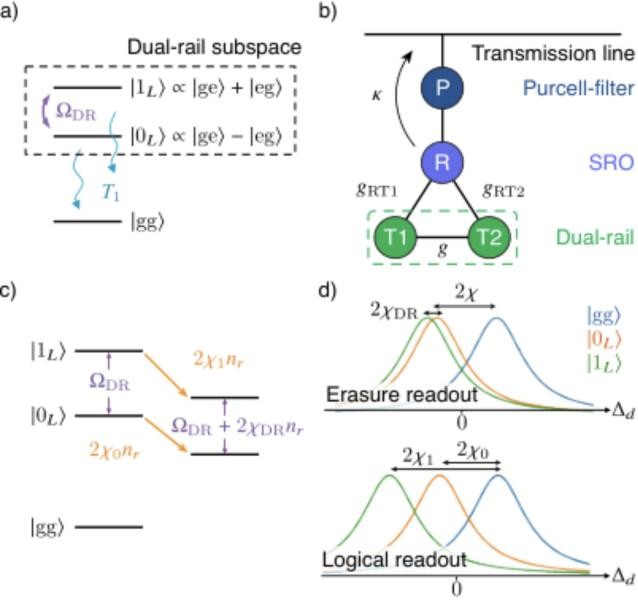
Error correction with erasure qubits
Turning erasure qubits into a fault-tolerant machine: architectures and their thresholds, error-correction protocols tuned to erasures, and heralding of amplitude-damping noise, which is also the subject of a family of Amazon patents.
- Fault-Tolerant Quantum Architectures Based on Erasure Qubits
Physical Review Research 7, 013249 (2025)DOI
Magic states and cultivation
Universal fault-tolerant computing needs magic states, which are the most expensive ingredient to prepare. We showed how erasure qubits lower the cost of magic state injection, and developed high-rate magic state cultivation on the surface code.
- Magic State Injection with Erasure Qubits
PRX Quantum 6, 040323 (2025)DOI
Superconducting hardware and gates
Gates and couplers for superconducting qubits, the limits that readout places on transmon lifetimes, and the concatenated bosonic-qubit architecture for hardware-efficient error correction.
- Hardware-Efficient Quantum Error Correction via Concatenated Bosonic Qubits
Nature 638, 927–934 (2025)DOI
- Readout-Induced Degradation of Transmon Lifetimes: Interplay of TLSs and Qubit Spectral Reshaping
PRX Quantum 7, 033059 (2026)DOI
- Robust Gates with Spin-Locked Superconducting Qubits
Physical Review Research 6, 013217 (2024)DOI
Patents assigned to Amazon Technologies
- Heralding of Amplitude Damping Decay Noise for Quantum Error Correction
U.S. Patent Application 19/281,376 (2026)Google Patents
- Quantum Gate Protocol for the Execution of Spin Locking Onto Superconducting Qubit Architectures
U.S. Patent 12,555,014 (2026)Google Patents
- Heralding of Amplitude Damping Decay Noise for Quantum Error Correction
U.S. Patent 12,400,140 (2025)Google Patents
- Heralding of Amplitude Damping Decay Noise for Quantum Error Correction
U.S. Patent 11,748,652 (2023)Google Patents
Molecular qubits · co-founder
NVision
Alex co-founded NVision, a company headquartered in Ulm, Germany, that builds quantum technology from engineered molecules. Instead of putting the complexity into the hardware, NVision designs organic molecules from the ground up so that their nuclear spins can be controlled precisely. The same molecular platform serves quantum computing, quantum networking, quantum sensing and quantum-enhanced medical imaging. The founding team is Sella Brosh (CEO), Ilai Schwartz (CTO), Martin Plenio and Fedor Jelezko of Ulm University, and Alex Retzker of the Hebrew University.
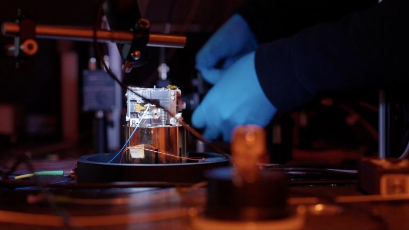
One molecular platform, four uses
A nuclear spin behaves like a tiny compass. Engineering the molecule around it sets how the spin is controlled and read out, so each molecule can be tailored to one quantum task.
- Quantum computing
- Photonic connections across millions of molecular spin qubits, for fault-tolerant quantum computers.
- Quantum networking
- A single photonic link between two molecular spin qubits: the building block of quantum repeaters that connect separate processors.
- Quantum sensing
- Reading how magnetic fields affect molecular nuclear spins, for very precise measurements.
- Quantum-enhanced imaging
- Aligning the nuclear spins of sugar molecules so that their MRI signal becomes more than 10,000 times stronger.
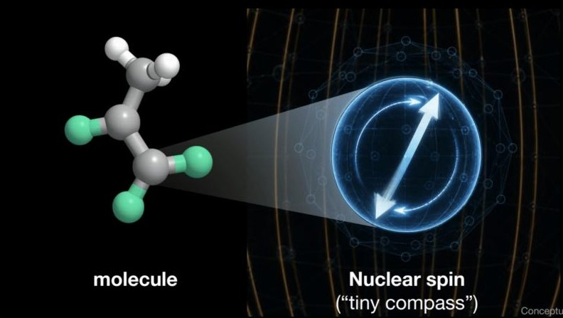

PIQC: molecular quantum computing
In most quantum computers the qubits sit next to each other and share each other's noise, which limits how far a machine can grow. PIQC (photonic integrated quantum circuits) connects qubits with light instead, so each qubit sits in its own quiet node and the processor can scale toward millions of qubits. The qubit is a carbene molecule, revealed in May 2026 and published in Nature in October 2026, that combines a nuclear-spin qubit with a built-in photon emitter. The molecules are deposited as films less than 100 nm thick directly onto silicon photonic chips, where each one can be addressed individually. Optical links give all-to-all connectivity, the chips are made with existing silicon-photonics manufacturing, and the system is designed for standard data-center racks.
- Memory
- Nuclear-spin coherence longer than 1 second
- Gates
- About 1 µs
- Temperature
- 2–4 K, reached with simple cryogenics
- Readout
- Spin-resolved single-photon emission
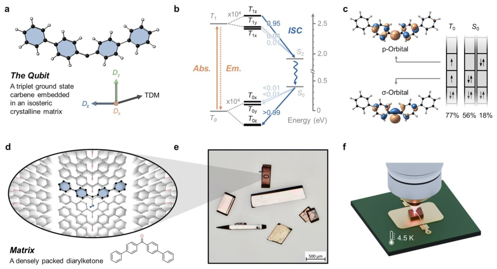
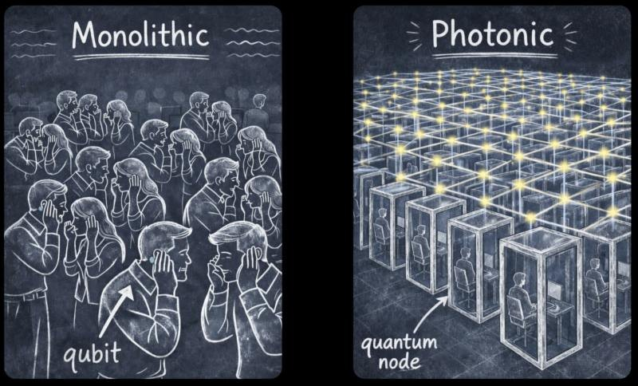
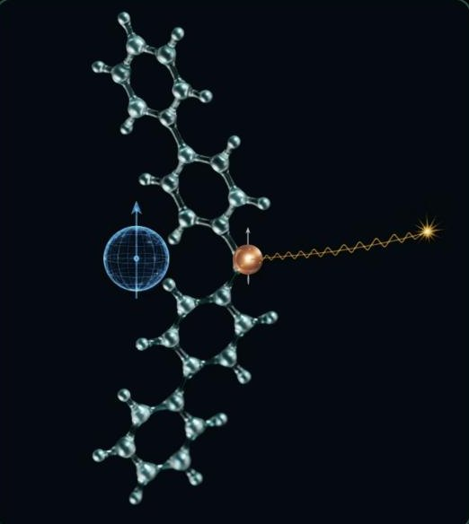
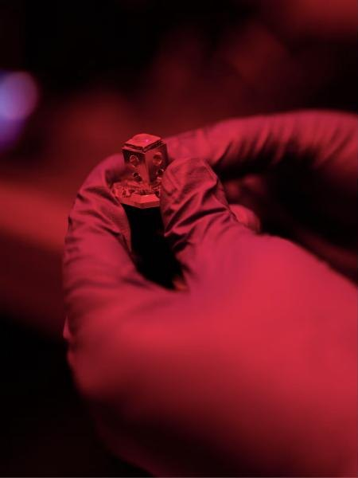
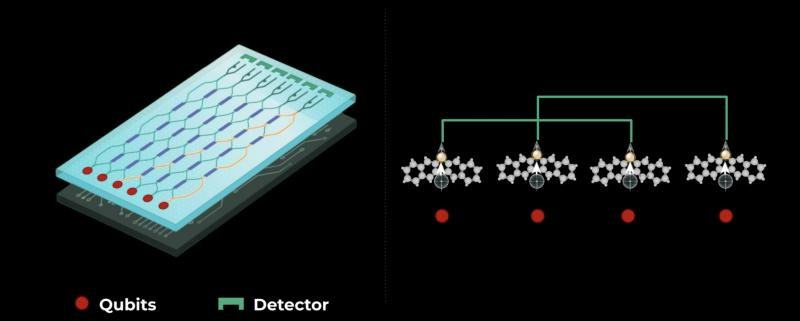
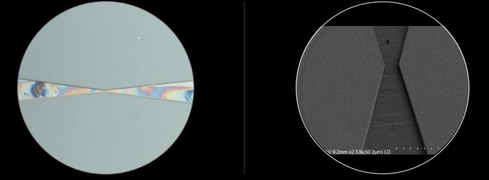
- Optically Detected Magnetic Resonance on Carbene Molecular Qubits
Journal of the American Chemical Society 147, 36383–36392 (2025)DOI
POLARIS: quantum-enhanced MRI
POLARIS uses quantum mechanics to align, or polarize, the nuclear spins of sugar and other molecules. The polarized molecule is injected and imaged on a standard MRI scanner, where its signal is more than 10,000 times stronger than usual, so researchers can follow metabolism in real time. In cancer this gives a direct view of tumor energy metabolism, by measuring the overproduction of lactate that drives tumor growth. Clinical research groups use it to develop imaging biomarkers, and POLARIS is being deployed at leading research centers worldwide.
- Staging
- More aggressive prostate tumors show higher pyruvate metabolism.
- Treatment guidance
- Pyruvate metabolism one week after treatment starts predicts the long-term response.
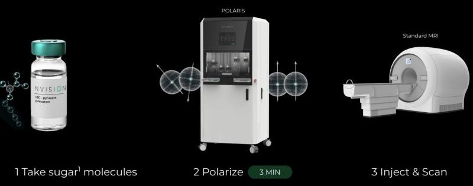
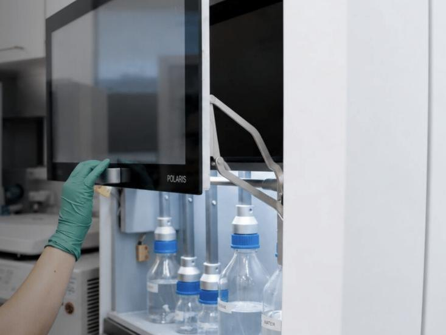
- Radio-Frequency Sweeps at Microtesla Fields for Parahydrogen-Induced Polarization of Biomolecules
The Journal of Physical Chemistry Letters 14, 2125–2132 (2023)DOIarXiv
Design and validate
The long-term aim joins the two platforms: design hard-to-make medicines with molecular quantum computers, then measure the body's response to them quickly with quantum-enhanced imaging. Each round of drug development becomes a short loop.